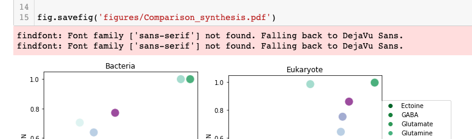

Over the last few years I have made a transition in my workflow from doing most of my data exploration and plotting on my local machine (a 2016 MacBook laptop) to doing most of my plotting on a remote HPC (check out this other blog post for more on that). This workflow is very convenient for many reasons (keeping all files in one location, more extensibility and power for my notebooks that my personal laptop can’t handle, minimizing file storage on my local machine, etc. etc.).
However, I could not get any of my font specifications to work in matplotlib (or any dependent programs) in my notebooks that I was running via ssh tunnel. Period.
I constantly got some variation of findfont: Font family ['sans-serif'] not found. Falling back to DejaVu Sans..:

This happened both when I directly specified the font in my notebook:
import matplotlib.pyplot as plt
plt.rcParams["font.family"] = "sans-serif"
And also when I modified my matplotlibrc file (more on that later).
I figured I was simply doing something wrong and eventually gave up on trying to fix it and just succumbed to my fate of manually changing fonts post-plotting in Adobe Illustrator. I did this for… several years.
And then yesterday, I had an epiphany. My remote HPC probably doesn’t have Microsoft fonts installed.
As Arianna said (slacked, really) when I asked for her comments on this blog post: “This is because unlike an OS that we’re used to working with that’s all set up out-of-the-box, HPC admins don’t really have a need to use anything but some kind of Courier New.”
Too true.
And so, I present to you…
How to specify fonts in matplotlib when you are working on a Linux system:
First off, I highly recommend using conda environments to manage research computational environments– it can enhance reproducibility and avoid package conflicts (more here). For the purposes of this tutorial, I will assume that you have created a conda environment that has matplotlib installed. For the sake of demonstration my environment is called general_plotting.
Conveniently, there is a conda package mscorefonts that contains all the “core fonts” that are used for the Web. These fonts include: Andale Mono, Arial, Arial Black, Comic Sans MS, Courier New, Georgia, Impact, Times New Roman, Trebuchet MS, Verdana, and Webdings. While not totally comprehensive, it provides enough font variety for my purposes.
After having activated whatever environment you are using, you can install the mscorefonts package.
conda activate general_plotting
conda install -c conda-forge mscorefonts
This will install and make those fonts available to you within your environment. We are almost done– but a few more steps just to make it work.
I found that I had to delete my cached matplotlib folder. If you have conda installed I believe that it should be located in your home directory; however, if you can’t find it there leave me a comment below.
rm ~/.cache/matplotlib -rf
Now, any adjustments you want to make should be fairly straightforward!
Now, you should be able to specify a font in your notebook preamble as you wish:
import matplotlib
matplotlib.rcParams['font.family'] = "sans-serif"
matplotlib.rcParams['font.sans-serif'] = "Comic Sans MS"
The above would make all plots in the notebook default to Comic Sans.
You should also be able to specify fonts directly on some figure portion (e.g. y-label):
fig, ax = plt.plot(x,y) #some random variables
ax.set_ylabel("First variable", fontname="Arial", fontsize=12)
Setting a default font
I generally like all my plots to look relatively similar. My preferred font is Arial – it is tidy and generally easy to read. If you want to specify a default font for all your plots without having to specify the rcParams in each notebook you can modify the matplotlibrc file for your environment. You can think of the matplotlibrc as similar to your .bashrc – it controls some of the basic functionality and preferences for your matplotlib plotting. This file can be a bit buried (especially when using conda environments). One easy way to find your file is to open a notebook within whatever environment you are using and type the following:
import matplotlib
print(matplotlib.matplotlib_fname())
This command will print the absolute path to your matplotlibrc.
Within this file, I edited the file such that I uncommented the following lines and made the following specifications:
font.family: sans-serif
font.sans-serif: Arial
As a random aside while you have your matplotlibrc file open and handy, you should consider changing your pdf.fonttype to TrueType rather than the default Type 3. If you go to edit or tinker with a .pdf file sometime down the line, you might be upset to discover that all the fonts have been converted to vectors (or outlined shapes of the fonts that can’t be easily altered). You can set your default behavior to be exporting editable TrueType fonts by finding pdf.fonttype in matplotlibrc and uncommenting it and changing it as follows:
pdf.fonttype: 42
You can now change your fonts as you please and not be stuck with DejaVu Sans (a font that I really, really, REALLY dislike).
Happy plotting!
[Thanks to Arianna for commenting on this blog post for me :)]